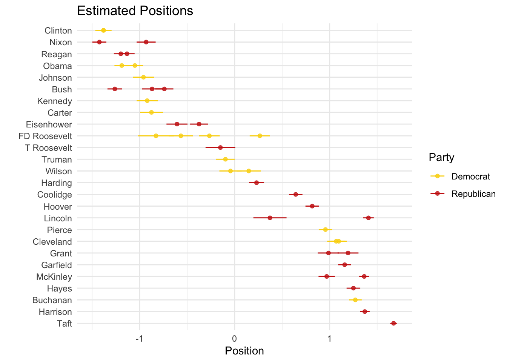
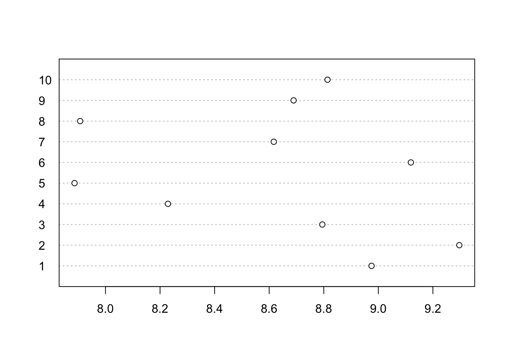

Chapter 5 Week 5: Scaling Techniques and Topic Modeling
Slides
- 6 Scaling Techniques and Topic Modeling (link or in Perusall)
5.1 Setup
As always, we first load the packages that we’ll be using:
# devtools::install_github("conjugateprior/austin")
library(austin) # just for those sweet wordscores
library(tidyverse) # for wrangling data
library(tidylog) # to know what we are wrangling
library(tidytext) # for 'tidy' manipulation of text data
library(quanteda) # tokenization power house
library(quanteda.textmodels)
library(stm) # run structural topic models
library(wesanderson) # to prettify5.2 Wordscores
Laver et al. (2003) propose a supervised scaling technique called wordscores. We learned about the intuition in this weeks lecture. We will now replicate Table 1 from Laver and Benoit (2003) using the austin package. The package includes some sample data we will be using:
Let’s keep only the reference documents:
## docs
## words R1 R2 R3 R4 R5
## A 2 0 0 0 0
## B 3 0 0 0 0
## C 10 0 0 0 0
## D 22 0 0 0 0
## E 45 0 0 0 0
## F 78 2 0 0 0
## G 115 3 0 0 0
## H 146 10 0 0 0
## I 158 22 0 0 0
## J 146 45 0 0 0
## K 115 78 2 0 0
## L 78 115 3 0 0
## M 45 146 10 0 0
## N 22 158 22 0 0
## O 10 146 45 0 0
## P 3 115 78 2 0
## Q 2 78 115 3 0
## R 0 45 146 10 0
## S 0 22 158 22 0
## T 0 10 146 45 0
## U 0 3 115 78 2
## V 0 2 78 115 3
## W 0 0 45 146 10
## X 0 0 22 158 22
## Y 0 0 10 146 45
## Z 0 0 3 115 78
## ZA 0 0 2 78 115
## ZB 0 0 0 45 146
## ZC 0 0 0 22 158
## ZD 0 0 0 10 146
## ZE 0 0 0 3 115
## ZF 0 0 0 2 78
## ZG 0 0 0 0 45
## ZH 0 0 0 0 22
## ZI 0 0 0 0 10
## ZJ 0 0 0 0 3
## ZK 0 0 0 0 2This is the same matrix from Figure 1, where we have a count for the count of each word (in this case, letters) by reference document (the documents that have been previously labelled). We can give scores A_scores to each reference text to place them in a ideological scale (or whatever scale we want). We then estimate the wordscores for each word.
# We do this in the order of the reference texts:
A_score <- c(-1.5,-0.75,0,0.75,1.5)
ws <- classic.wordscores(ref, scores=A_score)
ws$pi## Score
## A -1.5000000
## B -1.5000000
## C -1.5000000
## D -1.5000000
## E -1.5000000
## F -1.4812500
## G -1.4809322
## H -1.4519231
## I -1.4083333
## J -1.3232984
## K -1.1846154
## L -1.0369898
## M -0.8805970
## N -0.7500000
## O -0.6194030
## P -0.4507576
## Q -0.2992424
## R -0.1305970
## S 0.0000000
## T 0.1305970
## U 0.2992424
## V 0.4507576
## W 0.6194030
## X 0.7500000
## Y 0.8805970
## Z 1.0369898
## ZA 1.1846154
## ZB 1.3232984
## ZC 1.4083333
## ZD 1.4519231
## ZE 1.4809322
## ZF 1.4812500
## ZG 1.5000000
## ZH 1.5000000
## ZI 1.5000000
## ZJ 1.5000000
## ZK 1.5000000Now we get the virgin text and predict the textscore by estimating the average of the weighted wordscores for the virgin document:
## docs
## words V1
## A 0
## B 0
## C 0
## D 0
## E 0
## F 0
## G 0
## H 2
## I 3
## J 10
## K 22
## L 45
## M 78
## N 115
## O 146
## P 158
## Q 146
## R 115
## S 78
## T 45
## U 22
## V 10
## W 3
## X 2
## Y 0
## Z 0
## ZA 0
## ZB 0
## ZC 0
## ZD 0
## ZE 0
## ZF 0
## ZG 0
## ZH 0
## ZI 0
## ZJ 0
## ZK 0## 37 of 37 words (100%) are scorable
##
## Score Std. Err. Rescaled Lower Upper
## V1 -0.448 0.0119 -0.448 -0.459 -0.437Cool.
5.3 Wordfish
Slapin and Proksch (2008) propose an unsupervised scaling model that places texts in a one-dimensional scale. The underlying assumption is that in
\[w_{ik} ∼ Poisson(\lambda _{ik})\] \[\lambda_{ik} = exp(α_i +ψ_k +β_k ×θ_i)\]
\(\lambda_{ik}\) is generated by \(α_i\) (the “loquaciousness” of politician \(i\) or document fixed-effects), \(ψ_k\) (the frequency of word k), \(β_k\) (the discrimination parameter of word \(k\)) and, most importantly, \(θ_i\) (the politician’s ideological position). Let’s believe for a moment that the peer-review system works and use the textmodel_wordfish() function to estimate the ideological positions of U.S. Presidents using their inaugural speeches.
## # A tibble: 6 × 4
## inaugSpeech Year President party
## <chr> <dbl> <chr> <chr>
## 1 "My Countrymen, It a relief to feel that no heart but m… 1853 Pierce Demo…
## 2 "Fellow citizens, I appear before you this day to take … 1857 Buchanan Demo…
## 3 "Fellow-Citizens of the United States: In compliance wi… 1861 Lincoln Repu…
## 4 "Fellow-Countrymen:\r\n\r\nAt this second appearing to … 1865 Lincoln Repu…
## 5 "Citizens of the United States:\r\n\r\nYour suffrages h… 1869 Grant Repu…
## 6 "Fellow-Citizens:\r\n\r\nUnder Providence I have been c… 1873 Grant Repu…The text is pretty clean, so we can change it into a corpus object and then a dfm and apply textmodel_wordfish():
corpus_us_pres <- corpus(us_pres,
text_field = "inaugSpeech",
unique_docnames = TRUE)
summary(corpus_us_pres)## Corpus consisting of 41 documents, showing 41 documents:
##
## Text Types Tokens Sentences Year President party
## text1 1164 3631 104 1853 Pierce Democrat
## text2 944 3080 89 1857 Buchanan Democrat
## text3 1074 3992 135 1861 Lincoln Republican
## text4 359 774 26 1865 Lincoln Republican
## text5 484 1223 40 1869 Grant Republican
## text6 551 1469 43 1873 Grant Republican
## text7 830 2698 59 1877 Hayes Republican
## text8 1020 3206 111 1881 Garfield Republican
## text9 675 1812 44 1885 Cleveland Democrat
## text10 1351 4720 157 1889 Harrison Republican
## text11 821 2125 58 1893 Cleveland Democrat
## text12 1231 4345 130 1897 McKinley Republican
## text13 854 2437 100 1901 McKinley Republican
## text14 404 1079 33 1905 T Roosevelt Republican
## text15 1437 5821 158 1909 Taft Republican
## text16 658 1882 68 1913 Wilson Democrat
## text17 548 1648 59 1917 Wilson Democrat
## text18 1168 3717 148 1921 Harding Republican
## text19 1220 4440 196 1925 Coolidge Republican
## text20 1089 3855 158 1929 Hoover Republican
## text21 742 2052 85 1933 FD Roosevelt Democrat
## text22 724 1981 96 1937 FD Roosevelt Democrat
## text23 525 1494 68 1941 FD Roosevelt Democrat
## text24 274 619 27 1945 FD Roosevelt Democrat
## text25 780 2495 116 1949 Truman Democrat
## text26 899 2729 119 1953 Eisenhower Republican
## text27 620 1883 92 1957 Eisenhower Republican
## text28 565 1516 52 1961 Kennedy Democrat
## text29 567 1697 93 1965 Johnson Democrat
## text30 742 2395 103 1969 Nixon Republican
## text31 543 1978 68 1973 Nixon Republican
## text32 527 1363 52 1977 Carter Democrat
## text33 901 2771 129 1981 Reagan Republican
## text34 924 2897 124 1985 Reagan Republican
## text35 794 2666 141 1989 Bush Republican
## text36 642 1833 81 1993 Clinton Democrat
## text37 772 2423 111 1997 Clinton Democrat
## text38 620 1804 97 2001 Bush Republican
## text39 773 2321 100 2005 Bush Republican
## text40 937 2667 110 2009 Obama Democrat
## text41 814 2317 88 2013 Obama Democrat# We do the whole tokenization sequence
toks_us_pres <- tokens(corpus_us_pres,
remove_numbers = TRUE, # Thinks about this
remove_punct = TRUE, # Remove punctuation!
remove_url = TRUE) # Might be helpful
toks_us_pres <- tokens_remove(toks_us_pres,
# Should we though? See Denny and Spirling (2018)
c(stopwords(language = "en")),
padding = F)
toks_us_pres <- tokens_wordstem(toks_us_pres, language = "en")
dfm_us_pres <- dfm(toks_us_pres)
wfish_us_pres <- textmodel_wordfish(dfm_us_pres, dir = c(28,30)) #Does not really matter what the starting values are, they just serve as anchors for the relative position of the rest of the texts. In this case, I chose Kennedy and Nixon.
summary(wfish_us_pres)##
## Call:
## textmodel_wordfish.dfm(x = dfm_us_pres, dir = c(28, 30))
##
## Estimated Document Positions:
## theta se
## text1 -0.95629 0.03619
## text2 -1.27077 0.03413
## text3 -1.40878 0.02863
## text4 -0.37189 0.08907
## text5 -1.19374 0.05617
## text6 -0.98770 0.05747
## text7 -1.25058 0.03681
## text8 -1.15827 0.03506
## text9 -1.06959 0.04866
## text10 -1.37028 0.02601
## text11 -1.09563 0.04336
## text12 -1.36432 0.02716
## text13 -0.96921 0.04392
## text14 0.14969 0.07992
## text15 -1.67350 0.01837
## text16 0.04362 0.05968
## text17 -0.14872 0.06481
## text18 -0.23053 0.04050
## text19 -0.64321 0.03619
## text20 -0.81689 0.03636
## text21 -0.26532 0.05470
## text22 0.26579 0.05564
## text23 0.56628 0.06543
## text24 0.82820 0.09574
## text25 0.09676 0.04999
## text26 0.37480 0.04777
## text27 0.60678 0.05655
## text28 0.92039 0.05651
## text29 0.95967 0.05604
## text30 1.42421 0.03773
## text31 0.93162 0.05098
## text32 0.87564 0.06215
## text33 1.13335 0.04084
## text34 1.19832 0.03745
## text35 1.26112 0.03960
## text36 1.38125 0.04374
## text37 1.37962 0.03680
## text38 0.86932 0.05416
## text39 0.74023 0.04862
## text40 1.18811 0.03946
## text41 1.05044 0.04446
##
## Estimated Feature Scores:
## countrymen relief feel heart can know person regret bitter
## beta -0.5490 -0.9578 -0.4909 0.80654 0.1395 0.9422 -0.1117 -0.2531 0.00357
## psi -0.5455 -1.8438 -0.3950 0.08677 2.1155 0.6955 -0.1544 -2.8008 -2.01944
## sorrow born posit suitabl other rather desir circumst call
## beta 0.5176 0.7626 -0.9823 -4.120 0.3938 0.005296 -0.6213 -0.6355 0.3744
## psi -2.0333 -0.8259 -1.2129 -6.134 0.1718 -0.591942 -0.5404 -1.3620 0.5610
## limit period presid destini republ fill profound sens
## beta -0.07365 -0.004602 0.4897 0.2596 -0.27095 0.6832 -0.05067 -0.1156
## psi -0.02462 -1.040467 0.4726 -0.2598 0.08116 -1.6845 -1.52213 -0.2337
## respons noth like shrink
## beta 0.2263 -0.08437 0.01591 0.1689
## psi 0.8392 -0.25100 0.19881 -1.7082Let’s see if this made any sense. Since we have the party of the president, we should see the Republican cluster together and apart from Democrats (or something):
# Get predictions:
wfish_preds <- predict(wfish_us_pres, interval = "confidence")
# Tidy everything up:
posi_us_pres <- data.frame(docvars(corpus_us_pres),
wfish_preds$fit) %>%
arrange(fit)
# Plot
posi_us_pres %>%
ggplot(aes(x = fit, y = reorder(President,fit), xmin = lwr, xmax = upr, color = party)) +
geom_point(alpha = 0.8) +
geom_errorbarh(height = 0) +
labs(x = "Position", y = "", color = "Party") +
scale_color_manual(values = wes_palette("BottleRocket2")) +
theme_minimal() +
ggtitle("Estimated Positions")
Two things to note. First, the direction of the scale is a theoretically-based decision that the researcher has to make (not the algorithm). In our case, based on the results, we could say that the positive values are more left-leaning and the negative values are more right-leaning. We can switch that (for visualization purposes) just by multiplying by -1:
# Plot inverse
posi_us_pres %>%
ggplot(aes(x = -fit, y = reorder(President,fit), xmin = -lwr, xmax = -upr, color = party)) +
geom_point(alpha = 0.8) +
geom_errorbarh(height = 0) +
labs(x = "Position", y = "", color = "Party") +
scale_color_manual(values = wes_palette("BottleRocket2")) +
theme_minimal() +
ggtitle("Estimated Positions") Second, there seems to be a mismatch between our theoretical expectations and our empirical observations. We would assume that Republicans (Democrats) will talk similarly to other Republicans (Democrats) and different from Democrats (Republicans). However, this is not the case. What could be happening?
One answer could be that language changes over time or that issues change over time or that what it meant to be a Democrat and Republican changed over time, and that change is being picked up by the model:
# Plot time
posi_us_pres %>%
ggplot(aes(y = -fit, x = Year, ymin = -lwr, ymax = -upr, color = party)) +
geom_point(alpha = 0.8) +
geom_errorbar() +
labs(x = "Year", y = "Position", color = "Party") +
scale_color_manual(values = wes_palette("BottleRocket2")) +
theme_minimal() +
ggtitle("Estimated Positions")
That seems to be one possible explanation. The other could be that the pre-processing steps substantively modified the texts (see Denny and Spirling 2018). We can estimate the model again using a different pre-processed text:
# Tokenization only removing punctuation
toks_us_pres2 <- tokens(corpus_us_pres,
remove_punct = TRUE)
dfm_us_pres2 <- dfm(toks_us_pres2)
wfish_us_pres <- textmodel_wordfish(dfm_us_pres2, dir = c(28,30))
# Get predictions:
wfish_preds <- predict(wfish_us_pres, interval = "confidence")
# Tidy everything up:
posi_us_pres <- data.frame(docvars(corpus_us_pres),
wfish_preds$fit) %>%
arrange(fit)
# Plot
posi_us_pres %>%
ggplot(aes(x = -fit, y = reorder(President,fit), xmin = -lwr, xmax = -upr, color = party)) +
geom_point(alpha = 0.8) +
geom_errorbarh(height = 0) +
labs(x = "Position", y = "", color = "Party") +
scale_color_manual(values = wes_palette("BottleRocket2")) +
theme_minimal() +
ggtitle("Estimated Positions (No Pre-Processing") At the very least, the within president differences in estimates have narrowed, but time seems to still be the best predictor:
At the very least, the within president differences in estimates have narrowed, but time seems to still be the best predictor:
# Plot time
posi_us_pres %>%
ggplot(aes(y = -fit, x = Year, ymin = -lwr, ymax = -upr, color = party)) +
geom_point(alpha = 0.8) +
geom_errorbar() +
labs(x = "Year", y = "Position", color = "Party") +
scale_color_manual(values = wes_palette("BottleRocket2")) +
theme_minimal() +
ggtitle("Estimated Positions")If time is the main predictor, then maybe we need to think about periods of time that are comparable for both parties (e.g., after the Civil Rights Act).
5.4 Structural Topic Models
STM provides two ways to include contextual information to “guide” the estimation of the model. First, topic prevalence can vary by metadata (e.g. Republicans talk about military issues more than Democrats). Second, topic content can vary by metadata (e.g. Republicans talk about military issues differently from Democrats).
We can run STM using the stm package. The stm package includes the complete workflow (i.e. from raw text to figures), and if you are planning to use it in the future I highly encourage you to check this and this and this and this. stm() takes our dfm and produces topics. If we do not specify any prevalence terms, then it will estimate an LDA. Since this is a Bayesian approach, it is recommended you set a seed value for future replication. We also need to set \(K\) number of topics. How many topics are the right number of topics? There is no good number. Too many pre-specified topics and the categories might be meaningless. Too few, and you might be piling together two or more topics. Note that changes to a) the number of topics, b) the prevalence term, c) the omitted words, d) the seed value, can (greatly) change the outcome. Here is where validation becomes crucial (for a review see Wilkerson and Casas 2017).
Using our presidential speeches data, I will use stm to estimate the topics surrounding the inaugural addresses. As my prevalence term, I add the party of the speaker. I set my number of topics at 10 (but with a corpus this big I should probably set it at ~30 and work my way up from there).
## Beginning Spectral Initialization
## Calculating the gram matrix...
## Finding anchor words...
## ..........
## Recovering initialization...
## ..............................................
## Initialization complete.
## .........................................
## Completed E-Step (0 seconds).
## Completed M-Step.
## Completing Iteration 1 (approx. per word bound = -7.071)
## .........................................
## Completed E-Step (0 seconds).
## Completed M-Step.
## Completing Iteration 2 (approx. per word bound = -6.881, relative change = 2.689e-02)
## .........................................
## Completed E-Step (0 seconds).
## Completed M-Step.
## Completing Iteration 3 (approx. per word bound = -6.819, relative change = 8.961e-03)
## .........................................
## Completed E-Step (0 seconds).
## Completed M-Step.
## Completing Iteration 4 (approx. per word bound = -6.790, relative change = 4.253e-03)
## .........................................
## Completed E-Step (0 seconds).
## Completed M-Step.
## Completing Iteration 5 (approx. per word bound = -6.780, relative change = 1.521e-03)
## Topic 1: us, new, world, nation, let
## Topic 2: new, can, us, nation, work
## Topic 3: constitut, state, union, can, law
## Topic 4: nation, must, us, peopl, can
## Topic 5: govern, peopl, upon, state, law
## Topic 6: nation, freedom, america, govern, peopl
## Topic 7: us, america, must, nation, american
## Topic 8: upon, nation, govern, peopl, shall
## Topic 9: world, nation, peopl, peac, can
## Topic 10: us, nation, govern, must, peopl
## .........................................
## Completed E-Step (0 seconds).
## Completed M-Step.
## Completing Iteration 6 (approx. per word bound = -6.775, relative change = 6.929e-04)
## .........................................
## Completed E-Step (0 seconds).
## Completed M-Step.
## Completing Iteration 7 (approx. per word bound = -6.771, relative change = 5.320e-04)
## .........................................
## Completed E-Step (0 seconds).
## Completed M-Step.
## Completing Iteration 8 (approx. per word bound = -6.768, relative change = 5.267e-04)
## .........................................
## Completed E-Step (0 seconds).
## Completed M-Step.
## Completing Iteration 9 (approx. per word bound = -6.765, relative change = 4.328e-04)
## .........................................
## Completed E-Step (0 seconds).
## Completed M-Step.
## Completing Iteration 10 (approx. per word bound = -6.763, relative change = 3.022e-04)
## Topic 1: us, new, world, let, nation
## Topic 2: us, new, can, nation, work
## Topic 3: constitut, state, union, can, shall
## Topic 4: nation, must, peopl, us, world
## Topic 5: govern, peopl, upon, law, state
## Topic 6: nation, freedom, america, peopl, govern
## Topic 7: us, america, must, nation, american
## Topic 8: upon, nation, govern, peopl, can
## Topic 9: nation, world, peopl, peac, can
## Topic 10: us, govern, nation, peopl, must
## .........................................
## Completed E-Step (0 seconds).
## Completed M-Step.
## Completing Iteration 11 (approx. per word bound = -6.762, relative change = 2.094e-04)
## .........................................
## Completed E-Step (0 seconds).
## Completed M-Step.
## Completing Iteration 12 (approx. per word bound = -6.760, relative change = 1.745e-04)
## .........................................
## Completed E-Step (0 seconds).
## Completed M-Step.
## Completing Iteration 13 (approx. per word bound = -6.759, relative change = 1.485e-04)
## .........................................
## Completed E-Step (0 seconds).
## Completed M-Step.
## Completing Iteration 14 (approx. per word bound = -6.759, relative change = 1.147e-04)
## .........................................
## Completed E-Step (0 seconds).
## Completed M-Step.
## Completing Iteration 15 (approx. per word bound = -6.758, relative change = 1.018e-04)
## Topic 1: us, new, let, world, nation
## Topic 2: us, new, can, nation, work
## Topic 3: constitut, state, union, can, shall
## Topic 4: nation, must, peopl, us, world
## Topic 5: govern, peopl, upon, law, state
## Topic 6: nation, freedom, america, peopl, govern
## Topic 7: us, america, must, nation, american
## Topic 8: upon, nation, govern, peopl, can
## Topic 9: nation, peopl, world, can, peac
## Topic 10: us, govern, nation, peopl, must
## .........................................
## Completed E-Step (0 seconds).
## Completed M-Step.
## Completing Iteration 16 (approx. per word bound = -6.757, relative change = 9.728e-05)
## .........................................
## Completed E-Step (0 seconds).
## Completed M-Step.
## Completing Iteration 17 (approx. per word bound = -6.757, relative change = 8.328e-05)
## .........................................
## Completed E-Step (0 seconds).
## Completed M-Step.
## Completing Iteration 18 (approx. per word bound = -6.756, relative change = 7.150e-05)
## .........................................
## Completed E-Step (0 seconds).
## Completed M-Step.
## Completing Iteration 19 (approx. per word bound = -6.756, relative change = 5.364e-05)
## .........................................
## Completed E-Step (0 seconds).
## Completed M-Step.
## Completing Iteration 20 (approx. per word bound = -6.756, relative change = 3.903e-05)
## Topic 1: us, new, let, world, nation
## Topic 2: us, new, can, nation, work
## Topic 3: constitut, state, govern, shall, union
## Topic 4: nation, must, peopl, us, world
## Topic 5: govern, peopl, upon, law, state
## Topic 6: nation, freedom, america, peopl, govern
## Topic 7: us, america, must, nation, american
## Topic 8: upon, nation, govern, peopl, can
## Topic 9: nation, peopl, world, can, peac
## Topic 10: us, govern, nation, peopl, must
## .........................................
## Completed E-Step (0 seconds).
## Completed M-Step.
## Completing Iteration 21 (approx. per word bound = -6.755, relative change = 3.678e-05)
## .........................................
## Completed E-Step (0 seconds).
## Completed M-Step.
## Completing Iteration 22 (approx. per word bound = -6.755, relative change = 3.378e-05)
## .........................................
## Completed E-Step (0 seconds).
## Completed M-Step.
## Completing Iteration 23 (approx. per word bound = -6.755, relative change = 3.008e-05)
## .........................................
## Completed E-Step (0 seconds).
## Completed M-Step.
## Completing Iteration 24 (approx. per word bound = -6.755, relative change = 3.311e-05)
## .........................................
## Completed E-Step (0 seconds).
## Completed M-Step.
## Completing Iteration 25 (approx. per word bound = -6.754, relative change = 3.247e-05)
## Topic 1: us, new, let, world, nation
## Topic 2: us, new, can, nation, work
## Topic 3: constitut, state, govern, peopl, shall
## Topic 4: nation, must, peopl, us, world
## Topic 5: govern, peopl, upon, law, state
## Topic 6: nation, freedom, america, govern, peopl
## Topic 7: us, must, america, nation, american
## Topic 8: upon, nation, govern, peopl, can
## Topic 9: nation, peopl, world, can, peac
## Topic 10: us, govern, nation, peopl, must
## .........................................
## Completed E-Step (0 seconds).
## Completed M-Step.
## Completing Iteration 26 (approx. per word bound = -6.754, relative change = 2.886e-05)
## .........................................
## Completed E-Step (0 seconds).
## Completed M-Step.
## Completing Iteration 27 (approx. per word bound = -6.754, relative change = 2.778e-05)
## .........................................
## Completed E-Step (0 seconds).
## Completed M-Step.
## Completing Iteration 28 (approx. per word bound = -6.754, relative change = 2.814e-05)
## .........................................
## Completed E-Step (0 seconds).
## Completed M-Step.
## Completing Iteration 29 (approx. per word bound = -6.754, relative change = 4.342e-05)
## .........................................
## Completed E-Step (0 seconds).
## Completed M-Step.
## Completing Iteration 30 (approx. per word bound = -6.753, relative change = 2.111e-05)
## Topic 1: us, new, let, nation, world
## Topic 2: us, new, can, nation, work
## Topic 3: constitut, state, govern, peopl, shall
## Topic 4: nation, peopl, must, us, world
## Topic 5: govern, peopl, upon, law, state
## Topic 6: nation, freedom, america, govern, peopl
## Topic 7: us, must, america, nation, american
## Topic 8: upon, nation, govern, peopl, can
## Topic 9: nation, peopl, world, can, peac
## Topic 10: us, govern, nation, peopl, world
## .........................................
## Completed E-Step (0 seconds).
## Completed M-Step.
## Completing Iteration 31 (approx. per word bound = -6.753, relative change = 1.621e-05)
## .........................................
## Completed E-Step (0 seconds).
## Completed M-Step.
## Completing Iteration 32 (approx. per word bound = -6.753, relative change = 1.678e-05)
## .........................................
## Completed E-Step (0 seconds).
## Completed M-Step.
## Completing Iteration 33 (approx. per word bound = -6.753, relative change = 1.686e-05)
## .........................................
## Completed E-Step (0 seconds).
## Completed M-Step.
## Completing Iteration 34 (approx. per word bound = -6.753, relative change = 1.705e-05)
## .........................................
## Completed E-Step (0 seconds).
## Completed M-Step.
## Completing Iteration 35 (approx. per word bound = -6.753, relative change = 1.793e-05)
## Topic 1: us, new, let, nation, world
## Topic 2: us, new, can, nation, work
## Topic 3: constitut, state, govern, peopl, shall
## Topic 4: nation, peopl, must, us, world
## Topic 5: govern, peopl, upon, law, state
## Topic 6: nation, freedom, america, govern, peopl
## Topic 7: us, must, america, nation, american
## Topic 8: upon, nation, govern, peopl, can
## Topic 9: nation, peopl, world, can, peac
## Topic 10: us, govern, nation, peopl, world
## .........................................
## Completed E-Step (0 seconds).
## Completed M-Step.
## Completing Iteration 36 (approx. per word bound = -6.753, relative change = 2.033e-05)
## .........................................
## Completed E-Step (0 seconds).
## Completed M-Step.
## Completing Iteration 37 (approx. per word bound = -6.753, relative change = 2.216e-05)
## .........................................
## Completed E-Step (0 seconds).
## Completed M-Step.
## Completing Iteration 38 (approx. per word bound = -6.752, relative change = 1.878e-05)
## .........................................
## Completed E-Step (0 seconds).
## Completed M-Step.
## Completing Iteration 39 (approx. per word bound = -6.752, relative change = 1.591e-05)
## .........................................
## Completed E-Step (0 seconds).
## Completed M-Step.
## Completing Iteration 40 (approx. per word bound = -6.752, relative change = 1.384e-05)
## Topic 1: us, new, let, nation, world
## Topic 2: us, new, can, nation, work
## Topic 3: constitut, state, govern, peopl, shall
## Topic 4: nation, peopl, must, us, world
## Topic 5: govern, peopl, upon, law, state
## Topic 6: nation, freedom, america, govern, peopl
## Topic 7: us, must, america, nation, american
## Topic 8: upon, nation, govern, peopl, can
## Topic 9: nation, peopl, world, can, peac
## Topic 10: us, govern, nation, peopl, world
## .........................................
## Completed E-Step (0 seconds).
## Completed M-Step.
## Completing Iteration 41 (approx. per word bound = -6.752, relative change = 1.337e-05)
## .........................................
## Completed E-Step (0 seconds).
## Completed M-Step.
## Completing Iteration 42 (approx. per word bound = -6.752, relative change = 1.381e-05)
## .........................................
## Completed E-Step (0 seconds).
## Completed M-Step.
## Completing Iteration 43 (approx. per word bound = -6.752, relative change = 1.388e-05)
## .........................................
## Completed E-Step (0 seconds).
## Completed M-Step.
## Completing Iteration 44 (approx. per word bound = -6.752, relative change = 1.720e-05)
## .........................................
## Completed E-Step (0 seconds).
## Completed M-Step.
## Completing Iteration 45 (approx. per word bound = -6.752, relative change = 1.363e-05)
## Topic 1: us, new, let, nation, world
## Topic 2: us, new, can, nation, work
## Topic 3: constitut, state, govern, peopl, shall
## Topic 4: nation, peopl, must, us, world
## Topic 5: govern, peopl, upon, law, state
## Topic 6: nation, freedom, america, peopl, govern
## Topic 7: us, must, america, nation, american
## Topic 8: upon, nation, govern, peopl, can
## Topic 9: nation, peopl, world, can, peac
## Topic 10: us, govern, nation, peopl, world
## .........................................
## Completed E-Step (0 seconds).
## Completed M-Step.
## Completing Iteration 46 (approx. per word bound = -6.752, relative change = 1.725e-05)
## .........................................
## Completed E-Step (0 seconds).
## Completed M-Step.
## Completing Iteration 47 (approx. per word bound = -6.752, relative change = 1.410e-05)
## .........................................
## Completed E-Step (0 seconds).
## Completed M-Step.
## Model ConvergedThe nice thing about the stm() function is that it allows us to see in “real-time” what is going on within the black box. We can summarize the process in the following way (this is similar to a collapsed Gibbs sampling, which the stm() function sort of uses):
Go through each document, and randomly assign each word in the document to one of the topics \(\displaystyle t\in k\).
Notice that this random assignment already gives both topic representations of all the documents and word distributions of all the topics (albeit not very good ones).
So to improve on them, for each document \(\displaystyle W\) do the following:
3.1 Go through each word \(\displaystyle w\) in \(\displaystyle W\)
3.1.1 And for each topic \(\displaystyle t\), compute two things:
3.1.1.1 \(\displaystyle p(t|W)\) = the proportion of words in document \(\displaystyle W\) that are currently assigned to topic \(\displaystyle t\), and
3.1.1.2 \(\displaystyle p(w|t)\) = the proportion of assignments to topic \(\displaystyle t\) over all documents that come from this word \(\displaystyle w\). Reassign \(\displaystyle w\) a new topic, where we choose topic \(\displaystyle t\) with probability \(\displaystyle p(t|W)*p(w|t)\). It is worth noting that according to our generative model, this is essentially the probability that topic \(\displaystyle t\) generated word \(\displaystyle w\), so it makes sense that we resample the current word’s topic with this probability. (Also, I’m glossing over a couple of things here, in particular the use of priors/pseudocounts in these probabilities.)
3.1.1.3 In other words, in this step, we’re assuming that all topic assignments except for the current word in question are correct, and then updating the assignment of the current word using our model of how documents are generated.
- After repeating the previous step a large number of times, you’ll eventually reach a roughly steady state where your assignments are pretty good. So use these assignments to estimate the topic mixtures of each document (by counting the proportion of words assigned to each topic within that document) and the words associated with each topic (by counting the proportion of words assigned to each topic overall).
(This explanation was taken from here). Let’s explore the topics produced:
## Topic 1 Top Words:
## Highest Prob: us, new, let, nation, world, can, america
## FREX: let, centuri, togeth, dream, new, promis, weak
## Lift: 200th, 20th, micah, rhetor, 18th, 19th, accident
## Score: role, dream, abroad, third, explor, shape, proud
## Topic 2 Top Words:
## Highest Prob: us, new, can, nation, work, world, great
## FREX: friend, mr, thing, breez, word, blow, fact
## Lift: breez, crucial, addict, alloc, assistanc, bacteria, bicentenni
## Score: breez, crucial, blow, page, manger, thank, sometim
## Topic 3 Top Words:
## Highest Prob: constitut, state, govern, peopl, shall, can, law
## FREX: case, constitut, slave, union, territori, slaveri, minor
## Lift: alleg, anarchi, besid, compulsori, constru, cover, dissatisfi
## Score: case, slaveri, territori, slave, invas, provis, fli
## Topic 4 Top Words:
## Highest Prob: nation, peopl, must, us, world, can, govern
## FREX: activ, republ, task, confid, industri, inspir, normal
## Lift: abnorm, acclaim, aright, changer, comiti, frugal, gaze
## Score: normal, activ, amid, readjust, self-reli, relationship, unshaken
## Topic 5 Top Words:
## Highest Prob: govern, peopl, upon, law, state, countri, nation
## FREX: revenu, tariff, offic, appoint, busi, consider, proper
## Lift: ampli, antitrust, board, box, boycott, congression, dakota
## Score: revenu, legisl, enforc, polici, negro, interst, tariff
## Topic 6 Top Words:
## Highest Prob: nation, freedom, america, peopl, govern, know, democraci
## FREX: democraci, ideal, million, liberti, freedom, came, seen
## Lift: paint, >, aught, autocrat, baffl, baggag, beli
## Score: democraci, paint, million, magna, excus, seen, encount
## Topic 7 Top Words:
## Highest Prob: us, must, america, nation, american, world, peopl
## FREX: journey, stori, generat, storm, america, job, ideal
## Lift: afghanistan, aids, alongsid, anchor, anybodi, apathi, appalachia
## Score: stori, journey, job, capitol, storm, thank, drift
## Topic 8 Top Words:
## Highest Prob: upon, nation, govern, peopl, can, shall, great
## FREX: enforc, counsel, organ, island, thought, upon, integr
## Lift: cuba, eighteenth, adapt, aspect, creation, cuban, dilig
## Score: enforc, island, cuba, counsel, organ, eighteenth, adapt
## Topic 9 Top Words:
## Highest Prob: nation, peopl, world, can, peac, must, free
## FREX: resourc, contribut, repres, everywher, result, free, europ
## Lift: display, joint, likewis, mockeri, philosophi, array, barter
## Score: europ, philosophi, commun, contribut, precept, tax, program
## Topic 10 Top Words:
## Highest Prob: us, govern, nation, peopl, world, must, american
## FREX: weapon, tax, believ, hero, man, reduc, dream
## Lift: 50th, absent, adam, alamo, anger, ant, artilleri
## Score: weapon, hero, monument, nuclear, spend, tax, sovietFREX weights words by their overall frequency and how exclusive they are to the topic. Lift weights words by dividing by their frequency in other topics, therefore giving higher weight to words that appear less frequently in other topics. Similar to Lift, Score divides the log frequency of the word in the topic by the log frequency of the word in other topics (Roberts et al. 2013). Bischof and Airoldi (2012) show the value of using FREX over the other measures.
You can use the plot() function to show the topics.

Topic 5 seems to be about the economy: revenue, tariffs, etc. Topic 3 about slavery adn the Civil War. If you want to see a sample of a specific topic:
That is a long speech.
We can (should/must) run some diagnostics. There are two qualities that were are looking for in our model: semantic coherence and exclusivity. Exclusivity is based on the FREX labeling matrix. Semantic coherence is a criterion developed by Mimno et al. (2011) and it maximizes when the most probable words in a given topic frequently co-occur together. Mimno et al. (2011) show that the metric correlates well with human judgement of topic quality. Yet, it is fairly easy to obtain high semantic coherence so it is important to see it in tandem with exclusivity. Let’s see how exclusive are the words in each topic:

We can also see the semantic coherence of our topics –words a topic generates should co-occur often in the same document–:

We can also see the overall quality of our topic model:
## [1] -5.287875 -7.035510 -12.913601 -3.154439 -8.562729 -11.770514
## [7] -4.095783 -5.495206 -5.782951 -4.794982
## [1] 8.975188 9.296784 8.794789 8.229003 7.886663 9.119321 8.616780 7.907198
## [9] 8.689432 8.813805
On their own, both metrics are not really useful (what do those numbers even mean?). They are useful when we are looking for the “optimal” number of topics.
stm_us_pres_10_15_20 <- manyTopics(dfm_us_pres,
prevalence = ~ party,
K = c(10,15,20), runs=2,
# max.em.its = 100,
init.type = "Spectral") # It takes around 250 iterations for the model to converge. Depending on your computer, this can take a while.We can now compare the performance of each model based on their semantic coherence and exclusivity. We are looking for high exclusivity and high coherence (top-right corner):
k_10 <- stm_us_pres_10_15_20$out[[1]] # k_10 is an stm object which can be explored and used like any other topic model.
k_15 <- stm_us_pres_10_15_20$out[[2]]
k_20 <- stm_us_pres_10_15_20$out[[3]]
# I will just graph the 'quality' of each model:
topicQuality(k_10,dfm_us_pres)## [1] -5.287875 -7.035510 -12.913601 -3.154439 -8.562729 -11.770514
## [7] -4.095783 -5.495206 -5.782951 -4.794982
## [1] 8.975188 9.296784 8.794789 8.229003 7.886663 9.119321 8.616780 7.907198
## [9] 8.689432 8.813805
## [1] -8.282551 -10.661122 -9.146329 -6.243444 -10.002100 -11.315179
## [7] -3.107797 -4.907182 -5.059424 -4.905652 -7.864316 -13.149897
## [13] -6.834348 -11.917696 -4.182962
## [1] 9.225426 9.359212 9.252890 9.186251 9.037698 9.150213 8.615448 8.497762
## [9] 8.545416 9.139213 8.183189 9.136856 8.467946 9.642172 8.453394
## [1] -8.136428 -22.245476 -21.390006 -6.602534 -11.543624 -10.272049
## [7] -3.923380 -5.506620 -7.188791 -12.486262 -10.086060 -13.443443
## [13] -15.978725 -12.256070 -10.137597 -11.231218 -6.177453 -4.358259
## [19] -5.246579 -2.209688
## [1] 9.489401 9.872037 9.761442 9.184861 9.370893 9.330946 9.019413 8.522081
## [9] 8.633818 9.649097 8.307636 9.125968 8.957859 9.644505 9.533281 8.824664
## [17] 9.488938 9.220756 8.596374 8.727104
Maybe we have some theory about the difference in topic prevalence across parties. We can see the topic proportions in our topic model object:
## [,1] [,2] [,3] [,4] [,5]
## [1,] 0.0001965139 8.910433e-05 8.224181e-05 1.366525e-04 0.0003038924
## [2,] 0.0004943115 6.694931e-05 9.823350e-01 1.233605e-04 0.0162390724
## [3,] 0.0002929573 4.935711e-05 9.988060e-01 1.794408e-05 0.0005358752
## [4,] 0.1143189826 9.475844e-04 8.765515e-01 2.637466e-04 0.0030686131
## [5,] 0.0117265212 2.101959e-04 6.658082e-03 1.163485e-03 0.9768804322
## [6,] 0.0254848264 3.421690e-04 4.654306e-03 1.751075e-03 0.9609666414
## [,6] [,7] [,8] [,9] [,10]
## [1,] 2.109828e-04 1.271428e-04 9.985770e-01 1.726828e-04 1.037666e-04
## [2,] 1.673617e-04 1.837545e-04 2.369797e-04 9.412580e-05 5.907198e-05
## [3,] 6.424073e-05 5.105122e-05 6.933715e-05 6.752421e-05 4.572869e-05
## [4,] 7.946389e-04 8.965244e-04 7.116956e-04 1.080859e-03 1.365866e-03
## [5,] 5.210418e-04 4.736609e-04 8.391293e-04 8.456329e-04 6.818197e-04
## [6,] 7.226817e-04 6.610786e-04 1.740575e-03 1.314907e-03 2.361741e-03Note that the prevalence terms \(\theta\) will add to 1 within a document. That is, the term tells us the proportion of (words associated with) topics for each document:
## [1] 1## [1] 1What about connecting this info to our dfm and seeing if there are differences in the proportion topic 5 (economy) is addressed by each side.
## #refugeeswelcomeus_pres_prev <- data.frame(topic5 = stm_us_pres$theta[,5], docvars(dfm_us_pres))
feols_topic5 <- feols(topic5 ~ party , data = us_pres_prev)
plot_model(feols_topic5, type = "pred", term = "party") +
theme_minimal() +
labs(caption = "Stat. Sig. at p<0.1", x="", y="Topic Prevalence")
Seems that Republican presidents address more the economy in their speeches. Let’s plot the proportion of by president:
us_pres_prev %>%
# Going to log the prev of topic 5 because is quite skewed but you should probably leave as is if you want to explore how topics are addressed.
ggplot(aes(x = log(topic5), y = reorder(President,topic5), color = party)) +
geom_point(alpha = 0.8) +
labs(x = "log(Theta)", y = "", color = "Party") +
scale_color_manual(values = wes_palette("BottleRocket2")) +
theme_minimal() We can do something similar with the stm function directly. We just need to specify the functional form and add the document variables.
topics_us_pres <- estimateEffect(c(3,5) ~ party, stm_us_pres, docvars(dfm_us_pres)) # You can compare other topics by changing c(6,9).
plot(topics_us_pres, "party", method = "difference",
cov.value1 = "Democrat",
cov.value2 = "Republican",
labeltype = "custom",
xlim = c(-.75,.25),
custom.labels = c('Topic 3: Slavery', 'Topic 5: Economy'),
model = stm_us_pres)
Same results, Republicans mention more Topic 5: Economy.
5.5 Exercise 2:
- We had a hard time scaling our text. Why looked at some possible problems. What are possible solutions if we want to position U.S. presidents in a ideological scale using text?
- Use the
data/candidate-tweets.csvdata to run a STM. Decide what your covariates are going. Decide whether you will use all the data or a sample of the data. Decide if you are going to aggregate/divide in some way the text (i.e., decide your unit of analysis). Decide the number of topics you will look for (try more than one option). What can you tell me about the topics tweeted out by the 2015 U.S. primaries candidates? - Choose three topics. Can you place the candidates in an ideological scale within each topic (determine the \(theta\) threshold for when you can say that a tweet is mostly about a topic)? Does it make sense? Why or why not?